| نام دانشگاه | دانشگاه آزاد اسلامی واحد تهران جنوب |
|---|---|
| نام دانشکده | کامپیوتر |
| گروه / رشته | مهندسی نرم افزار |
| مقطع | کارشناسی |
| استاد راهنما | دکتر حمید رضا لطفعلی شمیرانی |
|---|---|
| نام دانشجو | محمد تدین |
| شماره دانشجویی | ۴۰۳۱۷۰۲۳۵ |
| نیمسال / سال | دیماه ۱۴۰۴–۱۴۰۵ |
در این پروژه یک سامانهی پایش و آبیاری برای گلدون حیاط ساختم تا ببینم تا کجا میشود کنترل را به هوش مصنوعی سپرد و خودم دائم به حیاط نروم. کار را روی سه برد ESP پیاده کردم: برد حیاط حسگر دما، رطوبت هوا و رطوبت خاک را میخواند و رلهی پمپ را میزند. برد واسط با وای فای به شبکهی خانه وصل میشود و همان داده و فرمان را از روی سیم به حیاط میرساند. برد پنل داخل خانه با صفحه لمسی و کتابخانهی LVGL وضعیت را نشان میدهد و دکمهی پمپ دارد.
مسیر فرمان دوطرفه است: پنل یا برنامهی لپتاپ از وای فای به برد واسط درخواست میزند، واسط روی سیم به حیاط میگوید وضعیت بفرست یا رله را عوض کن، و جواب برمیگردد. هواشناسی را از یک سرویس رایگان برای مختصات سیرجان گرفتم. کلید جدا لازم نداشت. اگر احتمال باران بالا باشد آبیاری را عقب میاندازم. تصمیم سادهی آبیاری روی لپتاپ است: اگر خاک خشک باشد و باران نباشد، پمپ چند ثانیه روشن میشود.
برنامه را در Arduino IDE نوشتم و هر برد را با کابل USB آپلود کردم. مدار را قبل از لحیم در آلتیوم کشیدم. نتیجهی کار یک سیستم کوچک خانگی است که هم دستی از پنل و هم خودکار از روی حسگر و هوا، پمپ را کنترل میکند.
| فهرست مطالب | صفحه |
| چکیده | ۱ |
| فهرست مطالب | ۲ |
| فهرست اشکال | ۴ |
| فهرست جداول | ۵ |
| فهرست علائم و اختصارات | ۶ |
| فصل ۱ — مقدمه و کلیات | ۷ |
| ۱-۱ بیان مسئله | ۷ |
| ۱-۲ اهمیت و ضرورت | ۷ |
| ۱-۳ اهداف پروژه | ۸ |
| ۱-۴ محدوده و محدودیتها | ۸ |
| ۱-۵ ساختار گزارش | ۸ |
| فصل ۲ — مبانی نظری و پیشینه | ۹ |
| ۲-۱ مفاهیم پایه | ۹ |
| ۲-۲ مقدمه سختافزار و معرفی ESP32 | ۱۰ |
| ۲-۳ تفاوت مدلهای خانواده ESP32 | ۱۱ |
| ۲-۴ سختافزار پروژه | ۱۲ |
| ۲-۵ قطعات و نقش پایهها | ۱۳ |
| ۲-۶ پیشینه و کارهای مشابه | ۱۴ |
| فصل ۳ — تحلیل نیاز و طراحی سیستم | ۱۸ |
| ۳-۱ نیازمندیهای کارکردی | ۱۸ |
| ۳-۲ نیازمندیهای غیرکارکردی | ۱۸ |
| ۳-۳ معماری کلی | ۱۹ |
| ۳-۴ طراحی سختافزاری | ۲۰ |
| ۳-۵ طراحی نرمافزاری | ۲۲ |
| فهرست مطالب | صفحه |
| فصل ۴ — پیادهسازی | ۲۴ |
| ۴-۱ محیط توسعه و اتصال برد به سیستم | ۲۴ |
| ۴-۲ پیادهسازی واحدها | ۲۶ |
| ۴-۳ انتخاب گیاه و جواب هوش مصنوعی | ۳۱ |
| ۴-۴ انتقال فرمان از سیستم به برد | ۳۳ |
| ۴-۵ یکپارچهسازی | ۳۴ |
| فصل ۵ — آزمایش، نتایج و ارزیابی | ۳۵ |
| ۵-۱ سناریوهای آزمون | ۳۵ |
| ۵-۲ نتایج | ۳۶ |
| ۵-۳ بحث | ۳۷ |
| ۵-۴ تجربه عملی و چیزهایی که اشتباه کردم | ۳۸ |
| ۵-۵ آزمایش یک هفته | ۳۹ |
| فصل ۶ — نتیجهگیری و کارهای آینده | ۴۰ |
| ۶-۱ جمعبندی | ۴۰ |
| ۶-۲ کارهای آینده | ۴۱ |
| ۶-۳ محدودیتها | ۴۲ |
| پیوستها | ۴۳ |
| پیوست الف — دستورهای بین بردها | ۴۳ |
| پیوست ب — نکات لازم برای نصب و کار | ۴۴ |
| پیوست ج — کاربردهای دیگر و انبوهسازی | ۴۵ |
| پیوست د — آینده اینترنت اشیا و هوش مصنوعی | ۴۶ |
| منابع و مآخذ | ۴۷ |
| فهرست اشکال | صفحه |
| شکل ۲-۱ — بردهای ESP پروژه | ۱۲ |
| شکل ۲-۲ — ماژولها و حسگرها | ۱۲ |
| شکل ۲-۳ — گلدون گلپونه (پروژه قبلی) | ۱۵ |
| شکل ۲-۳ الف — مدار پروژه قبلی | ۱۶ |
| شکل ۲-۴ — ساختار پروژه قبلی | ۱۷ |
| شکل ۳-۱ — معماری ارتباط سامانه و نقش هوش مصنوعی | ۱۹ |
| شکل ۳-۲ — اتصال سریال بین برد واسط و برد حیاط | ۲۰ |
| شکل ۳-۳ — شماتیک مدار در نرمافزار آلتیوم | ۲۱ |
| فهرست جداول | صفحه |
| جدول ۲-۱ — مقایسهی چند مدل اصلی خانواده ESP32 | ۱۱ |
| جدول ۲-۲ — فرق سادهی دو مدل | ۱۲ |
| جدول ۲-۳ — فهرست قطعات سختافزاری پروژه | ۱۳ |
| جدول ۲-۴ — نقش پایههای استفادهشده | ۱۳ |
| جدول ۳-۱ — نقش هر بخش در معماری | ۱۹ |
| جدول ۳-۲ — سیمکشی سریال بین دو برد | ۲۰ |
| جدول ۴-۱ — تنظیمات اتصال هر برد به لپتاپ | ۲۵ |
| جدول ۴-۲ — گیاهها و حسگر و پمپ هر کدام | ۳۱ |
| جدول ۵-۱ — نتیجهی آزمونهای سامانه | ۳۶ |
| جدول ۵-۲ — یادداشت یک هفته آزمایش فرضی | ۳۹ |
| جدول پ-۱ — دستور از واسط به حیاط | ۴۳ |
| اختصار | معنی / توضیح |
|---|---|
| IoT | اینترنت اشیا؛ وصل کردن دستگاه واقعی به شبکه |
| AI | هوش مصنوعی؛ اینجا تصمیم آبیاری روی لپتاپ |
| UART | ارتباط سریال سیمی بین برد واسط و برد حیاط |
| HTTP | پروتکل درخواست وب روی وای فای (مثل /status) |
| JSON | قالب متنی جواب حسگر و وضعیت برد |
| API | رابط آماده؛ اینجا پیشبینی هوا از Open-Meteo |
| GPIO | پایههای ورودی و خروجی میکروکنترلر |
| SPI | باس مشترک صفحه و لمس روی برد پنل |
| LVGL | کتابخانهی ساخت UI لمسی روی صفحه TFT |
| DHT | حسگر دما و رطوبت هوا روی برد حیاط |
| USB / COM | کابل و پورت سریال برای آپلود برنامه از لپتاپ |
| SoC | سیستم روی تراشه؛ مغز بردهای خانوادهی ESP32 |
راستش نگهداری گیاه، مخصوصاً وقتی گلدون توی حیاط باشد، کار سادهای نیست. یا آب دادنش یادم میرود و خاک خشک میشود، یا زیادی آب میدهم و ممکن است به ریشه آسیب بزند. هر بار هم برای چک کردن وضعیت یا روشن کردن پمپ باید بروم حیاط. این وسط اگر خودم خانه باشم، عملاً کار سختی میشود.
برای همین تو این پروژه یک سؤال اصلی داشتم: آیا هوش مصنوعی میتواند کنترل اشیا را تقریباً کامل دست بگیرد و کار را خودکار جلو ببرد یا نه؟ بهجای حرف کلی، آمدم روی یک نمونهی واقعی کار کردم. یعنی گلدون هوشمند. حسگرها وضعیت را میخوانند، هوش مصنوعی با همان دادهها برای آبیاری تصمیم میگیرد، و میکروکنترلر فرمان را به رله و پمپ میدهد. کنارش یک پنل لمسی داخل خانه هم گذاشتم تا خودم هم وضعیت را ببینم و اگر لازم شد دستی فرمان بدهم.
این روزها با اینترنت اشیا IoT و بردهایی مثل ESP32 خیلی راحتتر میشود حسگر و رله را به شبکه وصل کرد. برای من بهعنوان دانشجو، این پروژه هم تمرین عملی خوبی بود و هم یک کاربرد واقعی داشت. از طرفی آبیاری منظمتر یعنی کمتر آب هدر میرود و گیاه هم بهتر نگه داشته میشود. ولی هدف اصلیام فقط ساختن یک گلدون بامزه نبود. میخواستم ببینم تا کجا میشود کنترل را به هوش مصنوعی سپرد تا مجبور نباشم دائم خودم دخالت کنم.
هدف کلیام این بود که با ساخت یک سامانهی واقعی بفهمم آیا هوش مصنوعی میتواند اشیا را بهصورت خودکار کنترل کند یا نه. برای رسیدن به این هدف، این کارها را انجام دادم:
کار را کوچک و قابل انجام نگه داشتم: یک مجموعهی گلدون در حیاط و کنترل روی شبکهی خانگی خودمان. اپ موبایل جدا نساختم. ولی برای دسترسی از راه دور، یک سرویس ابری رایگان با سایت بلینک راه انداختم. از سه برد استفاده کردم حیاط، پنل، و برد واسط. خودِ تصمیم هوش مصنوعی روی لپتاپ اجرا میشود و فرمان نهایی به رله حیاط میرسد.
بقیهی گزارش را اینطوری جلو میبرم:
خلاصه اینکه میخواهم با این پروژه جواب روشنی بدهم: آیا میشود کنترل اشیا را به هوش مصنوعی سپرد تا خودکار کار کند؟ گلدون هوشمند همان نمونهای است که رویش این سؤال را امتحان کردم.
اینترنت اشیا در سادهترین شکلش یعنی دستگاههای واقعی را به شبکه وصل کنیم تا هم داده بگیریم هم فرمان بفرستیم. تو این پروژه مغز محلی کار، میکروکنترلر خانوادهی ایاسپی است. حسگر را میخواند و رله را کنترل میکند.
حسگر همان چیزی است که وضعیت را اندازه میگیرد. مثلاً دما، رطوبت هوا یا رطوبت خاک. محرک هم چیزی است که روی محیط اثر میگذارد. اینجا رله، پمپ آب را قطع و وصل میکند. اگر حسگر غلط بخواند، تصمیم هم غلط میشود. برای همین اول سعی کردم عددها را روی مانیتور سریال ببینم تا بفهمم خشک و تر تقریباً چه عددی میدهند.
ارتباط بین بردها دو جور است: یکی سیمی سریال ساده بین حیاط و واسط و یکی بیسیم وای فای خانه. نقش هر کدام را در معماری فصل ۳ آوردهام. هوش مصنوعی را روی لپتاپ گذاشتم تا با دادهی حسگر و هوا برای آبیاری تصمیم بگیرد. خود برد حیاط این تصمیم سنگین را نمیگیرد.
در پروژههای اینترنت اشیا، سختافزار معمولاً سه نقش دارد: حس کردن محیط، پردازش و تصمیم محلی، و اثر گذاشتن روی محیط مثلاً روشن کردن پمپ. اگر این سه بخش درست انتخاب و به هم وصل نشوند، نرمافزار هرقدر هم خوب باشد نتیجه پایدار نمیدهد. در این پروژه هم اول قطعات را جور کردم، بعد ارتباط بین بردها را ساختم، و در نهایت برنامهی هر بخش را نوشتم.
مغز کار من بردهای خانوادهی ایاسپی ساخت شرکت اسپرسیف است. این برد یک سیستم روی تراشه است. یعنی پردازنده، حافظه و رادیوی وای فای داخل همان قطعه جمع شدهاند. برای دانشجو و کار خانگی مناسب است چون ارزان است، پایه زیاد دارد، و میشود با آردوینو رویش برنامه ریخت.
روی هر برد توسعه معمولاً اینها را میبینیم: تراشهی اصلی، آنتن، رگولاتور ۳٫۳ ولت، مبدل کابل به سریال برای آپلود برنامه، و ردیف پایهها برای وصل حسگر و نمایشگر. من از این پایهها برای حسگر دما، حسگر خاک، رله، ارتباط سیمی بین دو برد، و صفحه لمسی پنل استفاده کردم.
در عمل سه برد آوردم: یک ESP32 معمولی برای پنل لمسی، و دو ESP32-S3 — یکی در حیاط برای حسگر و رله، یکی سالم در خانه بهعنوان پل وای فای. دلیلش را در بخش بعد با مقایسهی مدلها میگویم.
خانوادهی ESP32 چند سری دارد مثل ESP32، ESP32-S2، ESP32-C3 و ESP32-S3. همهشان وای فای ۲٫۴ گیگاهرتز دارند، ولی پردازنده، حافظه، بلوتوث و بعضی بخشهای جانبیشان فرق میکند. جدول ۲-۱ خلاصهای از همین تفاوتهاست.
جدول ۲-۱ — مقایسهی چند مدل اصلی خانواده ESP32
| ویژگی | ESP32 | ESP32-S3 | ESP32-C3 |
|---|---|---|---|
| هسته | دو هسته Xtensa LX6 | دو هسته Xtensa LX7 | تکهسته RISC-V |
| فرکانس معمول | تا ۲۴۰ MHz | تا ۲۴۰ MHz | تا ۱۶۰ MHz |
| SRAM داخلی | حدود ۵۲۰ KB | حدود ۵۱۲ KB | حدود ۴۰۰ KB |
| وای فای | 802.11 b/g/n | 802.11 b/g/n | 802.11 b/g/n |
| بلوتوث | Classic + BLE | BLE ۵ | BLE ۵ |
| تعداد پایه تقریبی | تا ۳۴ | تا ۴۵ | تا ۲۲ |
| USB داخلی | ندارد | دارد (OTG) | ندارد (سریال جدا) |
| کاربرد من | برد پنل | حیاط + برد سالم | در این گزارش اصلی نیست |
مدل اسسه نسل جدیدتر همین خانواده است. هسته قویتری دارد، پایه بیشتر دارد و برای کار با نمایشگر و حافظهی خارجی معمولاً راحتتر است. نسخهی معمولی همین خانواده هنوز خیلی رایج است و برای پنل لمسی من کافی بود. برد حیاط را از مدل اسسه با حافظه بیشتر گرفتم. برد واسط را هم از همین خانواده انتخاب کردم.
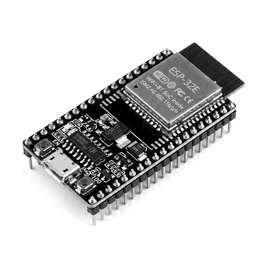
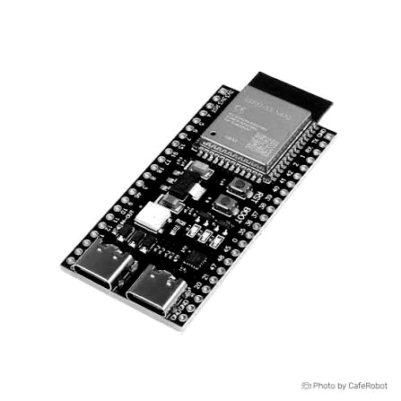
شکل ۲-۱ — بردهای ESP پروژه
برد پنل ESP32: وای فای داخلی دارد. صفحه لمسی روی آن است. برد حیاط و واسط ESP32-S3: حیاط حسگر و رله. واسط پل وای فای بین خانه و حیاط.
جدول ۲-۲ — فرق سادهی دو مدل
| مورد | ESP32 (پنل) | ESP32-S3 (حیاط / واسط) |
|---|---|---|
| وای فای | دارد | دارد |
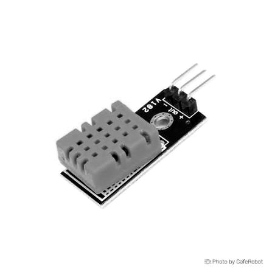
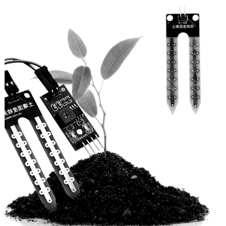
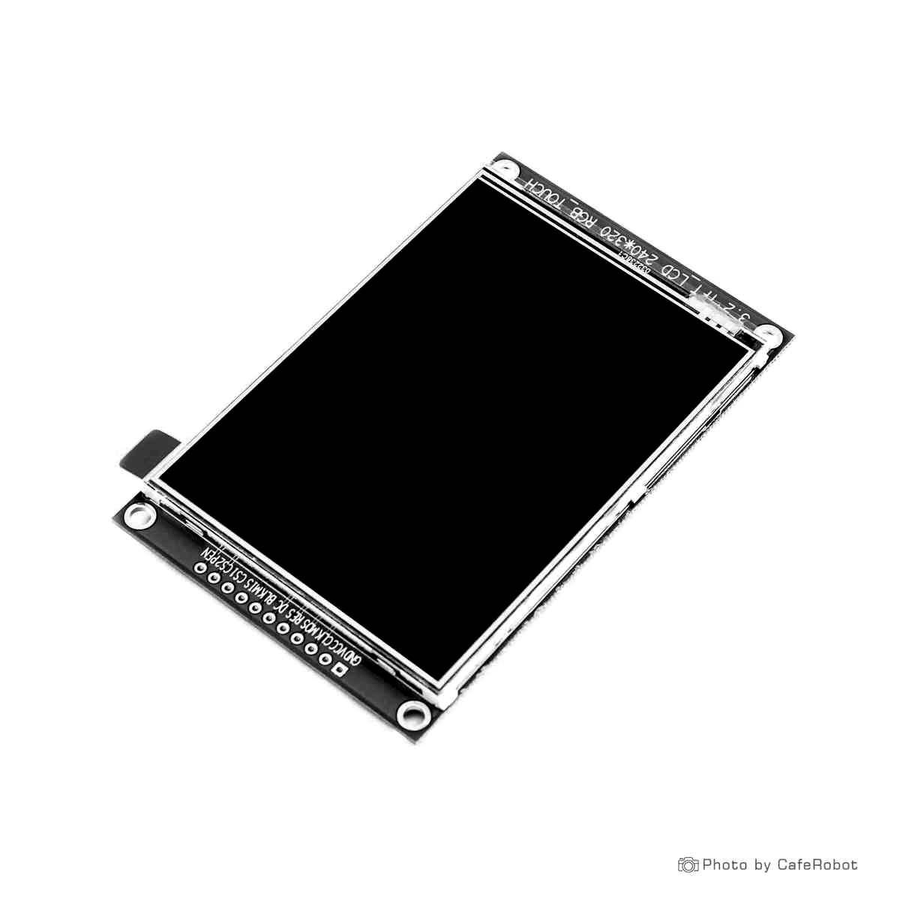
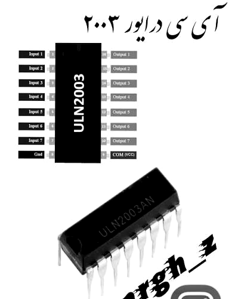
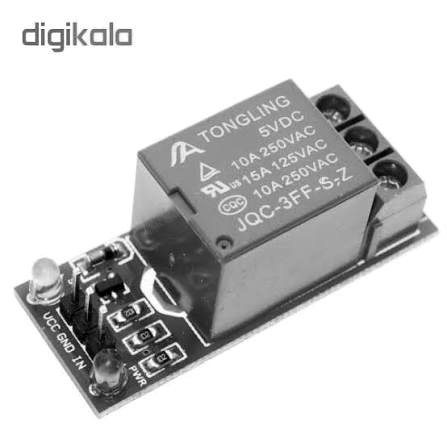
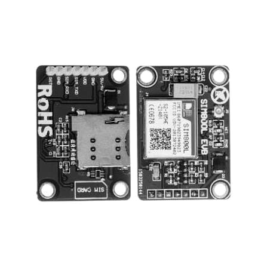
شکل ۲-۲ — ماژولها و حسگرها
DHT به پایهی ۴ و دو حسگر خاک به ۱ و ۲ وصل است. پمپ مستقیم به برد نرفت: ESP ← ULN ← رله ← پمپ. نمایشگر ۳٫۲ اینچ روی پنل است. ماژول SIM800L هم روی حیاط برای ارتباط پیامکی گذاشته شد.
جدول ۲-۳ قطعات اصلی همین پروژه را یکجا نشان میدهد. جدول ۲-۴ هم میگوید هر پایه دقیقاً به چه کاری وصل شده است.
جدول ۲-۳ — فهرست قطعات سختافزاری پروژه
| ردیف | نام قطعه | مدل / نوع | نقش در پروژه | محل |
|---|---|---|---|---|
| ۱ | برد ESP حیاط | ESP32-S3-N8R2 | حسگر و رله؛ UART به برد سالم | حیاط |
| ۲ | برد ESP واسط | ESP32-S3 | پل وای فای پنل به حیاط | خانه |
| ۳ | برد ESP پنل | ESP32 Dev Module | صفحه لمسی و ارسال فرمان | خانه |
| ۴ | نمایشگر لمسی | ILI9341 + XPT2046 | UI و لمس کاربر | روی پنل |
| ۵ | حسگر هوا | DHT11 | دما و رطوبت هوا | حیاط |
| ۶ | حسگر خاک | YL-69 ×۲ | رطوبت خاک گلدونها | حیاط |
| ۷ | ULN2003 | درایور رله | بین پایه برد و ورودی رله | حیاط |
| ۸ | ماژول رله | ۵ ولت / تک یا دو کانال | قطع و وصل دو پمپ | حیاط |
| ۹ | پمپ آب | ۳ ولت ×۲ | آبیاری دو مسیر | حیاط |
| ۱۰ | ماژول SIM800L | SIM800L EVB | ارتباط پیامکی | حیاط |
| ۱۱ | منبع تغذیه | ۵V کنترل + ۳V پمپ | برق کنترل و محرک جدا | حیاط |
جدول ۲-۴ — نقش پایههای استفادهشده
| برد | پایه | کار پایه |
|---|---|---|
| ESP حیاط | ۴ | DHT11 |
| ESP حیاط | ۱ / ۲ | خاک ۱ و ۲ |
| ESP حیاط | ۱۰ / ۱۱ | به ULN → رله ۱ و ۲ |
| حیاط / واسط | ۸ / ۹ | UART دوطرفه |
| ESP پنل | ۲۳ / ۱۸ / ۱۹ | SPI نمایشگر |
| ESP پنل | ۵ / ۲۱ / ۲۲ / ۱۵ | TFT و لمس |
پروژههای آبیاری هوشمند معمولاً یک حسگر خاک دارند، یک میکروکنترلر، و یک راه برای روشن کردن پمپ. خیلیها فقط با یک عدد ثابت کار میکنند. مثلاً اگر رطوبت از فلان حد کمتر شد، پمپ روشن شود. بعضیها هم اپ موبایل یا سرور ابری میگذارند تا از راه دور بشود وضعیت را دید.
کارهایی که دیدم بیشتر یا فقط حسگر خاک داشتند، یا فقط از موبایل پمپ را روشن میکردند. کمتر دیدم کسی هم پنل داخل خانه بگذارد، هم هوا را از اینترنت بگیرد، هم اسم گیاه را به مدل بدهد. من خواستم اینها با هم باشد تا اگر خودم خانه هستم از صفحه کار کنم، اگر لپتاپ روشن است با همان داده تصمیم بگیرد، و از راه دور هم با گوشی بتوانم وضعیت را ببینم و کار را پیگیری کنم.
یک فرق دیگرم این بود که برد حیاط را مستقیم به وای فای خانه وصل نکردم. یک برد واسط وسط گذاشتم تا خانه با وای فای حرف بزند و حیاط با سه سیم جواب بدهد. این کار اول سختتر بود، ولی بعداً تستش راحتتر شد. میفهمیدم مشکل از شبکه است یا از سیم.
برای یاد گرفتن هم از ویدیو و هم از پرسیدن از هوش مصنوعی استفاده کردم. بعضی مفهومها مثل سریال سیمی را اول قاطی میکردم. یعنی فرستنده و گیرنده را جابهجا میبستم. بعد که زمین مشترک را درست کردم، تازه جواب درست اومد. این تجربه را عمداً نوشتم چون تو کار عملی بیشتر از تعریف قطعهها به درد میخورد.
خودم قبلاً هم یک پروژه شبیه این کار کرده بودم با عنوان اکوسیستم گیاه هوشمند Smart Plant Ecosystem. آن نسخه خیلی کوچکتر بود و دور یک گلدون تکی جمع میشد: آبیاری از مخزن داخل خود گلدون انجام میشد، حسگر رطوبت خاک و حسگر سطح آب مخزن داشت، نمایشگر کوچک روی بدنه بود، و از طریق وای فای با سرویس ابری Blynk کنترل میشد. الگوریتم آب دادنش هم بهصورت کوتاهروشن و بعد مکث بود تا آب فرصت فرو رفتن در خاک را داشته باشد، نه اینکه یکسره پمپ را باز بگذارد.
در آن پروژه تقریباً همهچیز روی یک برد جمع بود و برای یک گلدون روی میز کافی بود. در این نسخه سعی کردم سیستم را ماژولارتر کنم تا برای گلخانه، باغ و مصارف دیگر هم قابل گسترش باشد. نه فقط برای یک گلدون تکی. برای همین برد حیاط را از پنل خانه جدا کردم، یک برد واسط وسط گذاشتم، نمایشگر را داخل خانه بردم، و تصمیم آبیاری را روی لپتاپ با اسم گیاه و وضعیت هوا گذاشتم.
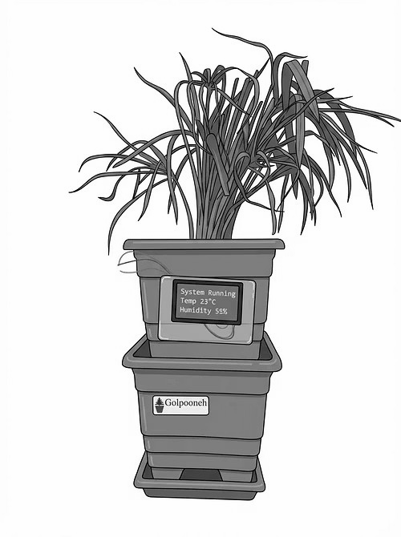
شکل ۲-۳ — گلدون گلپونه، پروژه قبلی من، اکوسیستم گیاه هوشمند
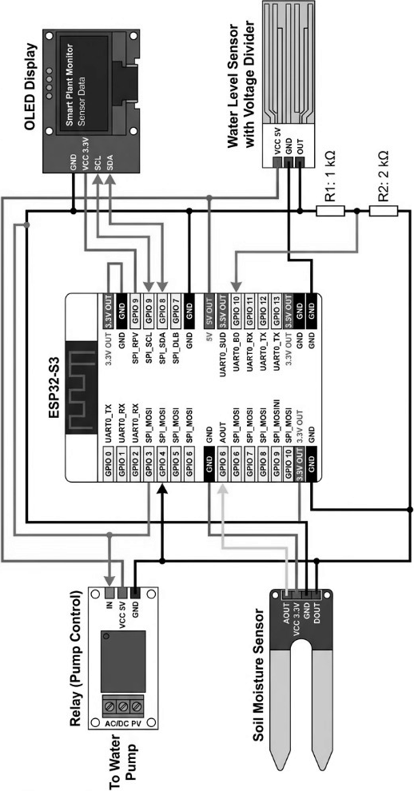
شکل ۲-۳ الف — مدار نسخه قبلی: ESP32-S3، حسگر خاک، سطح آب، رله و OLED
تا اینجا سختافزار، تفاوت مدلها، ماژولها، پایهها و پیشینه کار قبلی را نوشتم. فصل بعد میروم سراغ اینکه سیستم فعلی را چطور طراحی کردم.
ساختار همان پروژه قبلی لایهلایه بود: حسگر و پمپ و نمایشگر روی یک برد، منطق آبیاری کوتاهروشن و مکث روی خود برد، ارتباط ابری با بلینک، و محافظت از کار کردن پمپ وقتی مخزن خالی بود. شکل زیر همین لایهها را نشان میدهد.
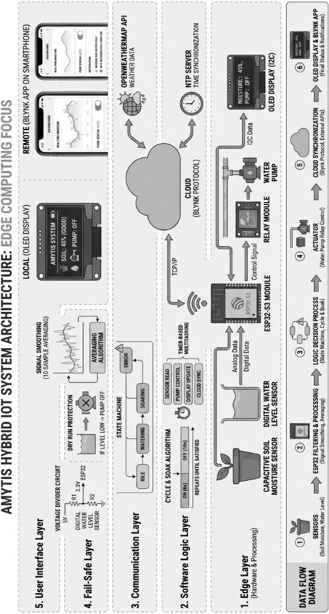
شکل ۲-۴ — ساختار پروژه قبلی (لایه لبه، منطق، ارتباط، ایمنی و رابط کاربری)
قبل از ساخت، برای خودم نوشتم سیستم باید این کارها را بلد باشد:
فقط کار کند کافی نبود. میخواستم ارتباط بین خانه و حیاط پایدار باشد، فرمان با تأخیر معقول برسد، و کار با پنل برای خودم ساده باشد. سیستم روی شبکهی خانگی خودمان اجرا میشود. کنارش هم یک سرویس ابری رایگان با بلینک ساختم تا از راه دور هم بشود وضعیت را دید و کار را پیگیری کرد.
مسیر ارتباط: برد پنل با وای فای به برد واسط، و برد واسط با سیم سریال دوطرفه به برد حیاط. وضعیت حسگر و فرمان رله از همین مسیر رد و بدل میشود.
نقش سیستم تصمیمگیری هوش مصنوعی روی لپتاپ است، نه روی خود بردها. ورودی: رطوبت خاک از حیاط، دما و رطوبت هوا، پیشبینی باران، آستانه و تنظیمات هر گیاه، و در صورت نیاز عکس گیاه. پردازش: اول از مدل زبانی پیشنهاد آبیاری میگیرد. اگر مدل در دسترس نباشد، با قانون محلی تصمیم میگیرد مثلاً اگر خاک از آستانه خشکتر بود و باران نبود، آبیاری. خروجی: کدام پمپ، چند ثانیه آب بدهد، و دلیل تصمیم. بعد فرمان از مسیر شبکه به رله حیاط میرسد. اگر روی پنل حالت خودکار خاموش باشد، آبیاری خودکار انجام نمیشود.
شکل ۳-۱ — معماری ارتباط سامانه و نقش هوش مصنوعی
جدول ۳-۱ — نقش هر بخش در معماری
| بخش | کارش چیست | چطور وصل است |
|---|---|---|
| برد ESP پنل | نمایش وضعیت، لمس، کنترل دستی / AI | وای فای دوطرفه با برد واسط |
| برد ESP واسط | پل بین خانه و حیاط | وای فای با پنل؛ سیم با حیاط |
| برد ESP حیاط | حسگر و رله / پمپ | سیم دوطرفه با واسط |
| لپتاپ | تصمیم آبیاری (مدل یا قانون محلی) | شبکه؛ فرمان به رله حیاط |
قبل از سیمکشی واقعی، نقشهی شماتیک برد را خودم کشیدم: برد حیاط در مرکز، حسگرها و رله و پمپ دورش، و مسیر ارتباط با برد واسط جدا مشخص شد. کشیدن نقشه کمک کرد پایهها قاطی نشوند و موقع بستن سیم کمتر اشتباه کنم.
UART یک ارتباط سریال ساده بین دو برد است. هر طرف دو پایه دارد: یکی برای فرستادن داده و یکی برای گرفتن. برای حرف زدن دوطرفه، فرستندهی یکی باید به گیرندهی دیگری وصل شود. زمین دو برد هم مشترک است. سرعت ارسال دو طرف باید یکی باشد تا داده غلط خوانده نشود.
شکل ۳-۲ — اتصال سریال بین برد واسط و برد حیاط
جدول ۳-۲ — سیمکشی سریال بین دو برد
| برد واسط | برد حیاط | کار سیم |
|---|---|---|
| پایه ۸ (فرستنده) | پایه ۹ (گیرنده) | داده از واسط به حیاط |
| پایه ۹ (گیرنده) | پایه ۸ (فرستنده) | داده از حیاط به واسط |
| زمین | زمین | مرجع مشترک |
خودم از اول UART بلد نبودم. اول ویدیوهای یوتیوب را دیدم تا بفهمم این سه سیم چه کاری میکنند. بعد با هوش مصنوعی سؤال میپرسیدم و خطاهای برنامه را چک میکردم. کنارش با چند نفر که قبلاً با ESP کار کرده بودند حرف زدم. آنها گفتند زمین مشترک را فراموش نکنم و پایهی فرستنده و گیرنده را برعکس نبندم. با همین روش وصلش کردم و تست گرفتم تا دو برد به هم جواب بدهند.
شکل ۳-۳ — شماتیک مدار در نرمافزار آلتیوم
تمام مدارها قبل از لحیمکاری در نرمافزار آلتیوم (Altium) طراحی شدند. برای تغذیه از یک ماژول شارژ پاوربانک استفاده کردم و دو منبع جدا گذاشتم: یکی برای بردها و مدار کنترل، و یکی برای پمپهای آب. تا وقتی موتور روشن میشود نویز یا افت ولتاژ روی برد نیاید. خروجی رلهها را طوری بستم که با چسبیدن تیغهها مسیر موتور وصل شود و پمپ روشن شود. یک سلول خورشیدی (سولار) هم به سیستم اضافه کردم تا از انرژی خورشید شارژ بگیرد. چون در شماتیک ورودی برق را ثابت فرض کرده بودم، خودِ پنل خورشیدی را داخل این نقشه نکشیدم.
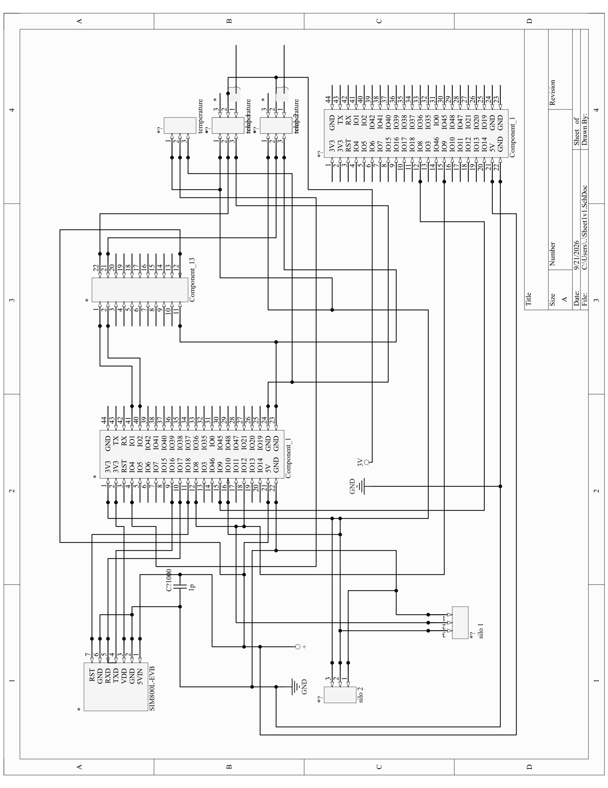
نرمافزار پروژه را چند تکه کردم تا هر برد کار خودش را داشته باشد:
برای صفحات پنل از کتابخانه گرافیکی الویجیال استفاده میکنم تا دکمه و نوشته را راحتتر بچینم. برای خود صفحه هم یک درایور جدا لازم بود تا پیکسلها روی نمایشگر بروند.
جمعبندی این فصل: نیازها، معماری، نقشه سختافزار و سیم سریال، نقش هوش مصنوعی و تقسیم برنامه را نوشتم. فصل بعد میروم سراغ پیادهسازی واقعی.
بین این چهار برنامه یک قرارداد ساده گذاشتم تا قاطی نشوند. حیاط فقط دو جور حرف میفهمد: یکی بگو وضعیت چیست، یکی رله را عوض کن. واسط همین دو تا را از وای فای میگیرد و روی سیم مینویسد. پنل و لپتاپ هیچکدام مستقیم به حیاط وصل نیستند.
این قرارداد را عمداً کوتاه نگه داشتم. اگر میخواستم پروتکل خیلی شیک بنویسم وقت میگرفت و برای دو فرمان لازم نبود. همین متن خطبهخط برای دانشجو قابل دنبال کردن است و تو سریال مانیتور هم همان را میبینم.
ساعت و تقویم روی برد حیاط نگذاشتم. زمان تصمیم مال لپتاپ است. برد فقط همان لحظه حسگر را میخواند. اگر لپتاپ خاموش باشد، باز از پنل میشود پمپ را زد. یعنی سیستم کامل نمیخوابد، فقط حالت خودکارش میایستد.
قبل از نوشتن کد، اول محیط کار را روی لپتاپ خودم راه انداختم تا هر برد با کابل USB به سیستم وصل شود و بشود برنامه را آپلود کرد.
نرمافزار آردوینو را نصب کردم. چون بردهای من از خانواده ایاسپی هستند، از منوی ابزار → برد → مدیر بردها، بسته رسمی همین خانواده را نصب کردم. بدون این بسته، اسم بردها تو لیست نمیاد.
برای وصل کردن هر برد به لپتاپ از کابل دیتا استفاده کردم بعضی کابلها فقط شارژ میدهند و پورت نمیسازند. بعد از وصل، تو ویندوز یک پورت جدید میآید. مثلاً حیاط روی پورت ۷ و پنل روی پورت ۱۴ دیده شد. همان شماره را از منوی ابزار → پورت انتخاب کردم.
تنظیمات مهم منوی ابزار برای بردهای حیاط و واسط اینها بود:
برای برد پنل که مدل معمولی است، نوع برد را روی ماژول توسعه معمولی گذاشتم. سرعت آپلود را معمولاً ۱۱۵۲۰۰ نگه داشتم تا خطا کمتر شود. بعد از آپلود، مانیتور سریال را با همین سرعت باز کردم تا پیام آماده یا خطا را ببینم. اگر سرعت اشتباه باشد فقط حروف الکی دیده میشود.
جدول ۴-۱ — تنظیمات اتصال هر برد به لپتاپ
| برد | مدل در آردوینو | نمونه پورت |
|---|---|---|
| حیاط | ESP32S3 Dev Module | COM7 |
| واسط | ESP32S3 Dev Module | COM9 |
| پنل | ESP32 Dev Module | COM14 |
کتابخانهها را از مدیر کتابخانه نصب کردم:
برای TFT_eSPI پینهای صفحه را با پنل خودم یکی کردم:
اسم و رمز وای فای خانه را داخل کد برد واسط و پنل نوشتم تا به شبکهی ۲٫۴ گیگاهرتز وصل شوند.
خلاصهی کار ستاپ: نصب IDE و بسته ESP32 → وصل USB → انتخاب Board و Port → نصب کتابخانه → آپلود → چک با مانیتور سریال. بعد از این مرحله رفتم سراغ نوشتن برنامهی هر واحد.
برنامه را چهار تکه کردم تا هر برد کار خودش را داشته باشد و اگر یکی خراب شد بقیه را راحتتر پیدا کنم. اول برد حیاط را راه انداختم چون حسگر و رله روی همین برد است. بدون این تکه، پنل و لپتاپ چیزی برای خواندن ندارند. در شروع برنامه پایههای رله را خروجی میگذارم، ارتباط سیمی را باز میکنم و حسگر هوا را شروع میکنم:
تکه کد ۱ — راهاندازی برد حیاط
void setup(){
Serial.begin(115200);
pinMode(10, OUTPUT);
pinMode(11, OUTPUT);
uart.begin(115200, SERIAL_8N1, 9, 8); // rx=9 tx=8
dht.begin();
}
این تکه فقط یکبار اول اجرا میشود. پایه ۱۰ رله گیاه اول و پایه ۱۱ رله گیاه دوم است.
خط UART میگوید سرعت ۱۱۵۲۰۰ باشد، گیرنده پایه ۹ و فرستنده پایه ۸.
از این به بعد برد در loop فقط گوش میدهد. خودش سرخود پمپ را روشن نمیکند تا فرمان از خانه بیاید.
در حلقهی اصلی، اگر از UART دستوری آمد میخوانم. اگر دستور وضعیت بود، حسگرها را میخوانم و جواب را به شکل یک خط متن برمیگردانم:
تکه کد ۲ — خواندن حسگر و فرستادن وضعیت
if(s == "STATUS"){
float t = dht.readTemperature();
float h = dht.readHumidity();
int k1 = analogRead(1);
int k2 = analogRead(2);
uart.print("{\"ok\":true,\"t\":");
uart.print(t);
uart.print(",\"h\":");
uart.print(h);
uart.print(",\"soil1\":");
uart.print(k1);
uart.print(",\"soil2\":");
uart.print(k2);
uart.println("}");
}
این تکه دما (t)، رطوبت هوا (h) و دو عدد آنالوگ خاک را میگیرد
و روی UART میفرستد تا برد واسط همان را از وای فای به بیرون بدهد.
برای روشن و خاموش کردن پمپ هم دستورهایی مثل RELAY,1,1 و RELAY,1,0 گذاشتم.
عدد وسط شماره رله است و عدد آخر وضعیت روشن یا خاموش. با همینها پایه ۱۰ یا ۱۱ را HIGH و LOW میکنم.
برد واسط به وای فای خانه وصل میشود و یک سرور کوچک راه میاندازد.
وقتی کسی آدرس /status را بزند، همین برد روی UART به حیاط میگوید STATUS و جواب را برمیگرداند:
تکه کد ۴ — فرستادن دستور روی UART و گرفتن جواب
String uart_cmd(String cmd){
while(uart.available()) uart.read();
uart.println(cmd);
String r = "";
unsigned long t = millis();
while(millis() - t < 2000){
if(uart.available()){
char c = uart.read();
if(c == '\n'){ r.trim(); if(r.length()>0) return r; }
else r += c;
}
}
return "{\"ok\":false,\"err\":\"timeout\"}";
}
این تابع اول بافر قدیمی را خالی میکند، بعد دستور را میفرستد و حداکثر دو ثانیه منتظر خط جواب میماند. اگر چیزی نیامد، یک متن خطا برمیگرداند تا پنل گیر نکند.
تکه کد ۵ — مسیرهای HTTP روی برد واسط
server.on("/status", [](){
last_json = uart_cmd("STATUS");
server.send(200, "application/json", last_json);
});
server.on("/relay", [](){
int n = server.arg("n").toInt();
int st = server.arg("state").toInt();
String c = "RELAY," + String(n) + "," + String(st);
last_json = uart_cmd(c);
server.send(200, "application/json", last_json);
});
یعنی پنل یا لپتاپ لازم نیست مستقیم UART بلد باشند. فقط با وای فای به این دو آدرس درخواست میزنند.
برای آب و هوا از سرویس رایگان هواشناسی استفاده کردم. خوبیش این است که کلید جدا لازم ندارد. فقط با یک لینک میشود پیشبینی را گرفت. مختصات شهر سیرجان را در لینک گذاشتم و گفتم دمای فعلی، رطوبت، کد هوا و احتمال باران چند روز بعد را بدهد.
تکه کد ۶ — گرفتن پیشبینی هوا از Open-Meteo
String url = "http://api.open-meteo.com/v1/forecast" "?latitude=29.4514&longitude=55.6809" "¤t=temperature_2m,relative_humidity_2m,weather_code" "&daily=precipitation_probability_max" "&timezone=Asia%2FTehran&forecast_days=5"; HTTPClient http; http.begin(url); int c = http.GET(); String body = http.getString(); http.end();
این تکه لینک را میسازد، درخواست میفرستد و متن جواب را میگیرد. بعد از روی همین متن، عدد دما و احتمال باران را درمیآورم. خود برد پنل همین کار را میکند و جواب را روی صفحه هوا میکشد. اگر احتمال باران زیاد باشد یا کد هوا نشانهی باران باشد، همانجا نشان میدهم بارانی است تا بیخود پمپ روشن نشود.
تکه کد ۷ — تشخیص سادهی باران از جواب API
bool rain = (pp >= 40) || (weather_code >= 51);
if(rain){
// امروز یا پیشبینی باران است
}
عدد ۴۰ را خودم برای احتمال باران گذاشتم. اگر احتمال از این بیشتر بود، فرض میکنم باران میآید. کدهای هواشناسی از حدود ۵۱ به بالا معمولاً مربوط به باراناند.
روی برد پنل UI را با LVGL ساختم. روی صفحه دو جور داده میآید: حسگر حیاط، و هوا از اینترنت.
برای حسگرها پنل خودش به حیاط وصل نیست. هر چند ثانیه با وای فای به
http://goldon-modem.local/status درخواست میزند.
برد واسط روی سیم به حیاط میگوید STATUS. حیاط DHT و دو حسگر خاک را میخواند و یک خط JSON برمیگرداند.
پنل همان خط را باز میکند: دما و رطوبت هوا را روی صفحه اقلیم، و رطوبت دو خاک را روی صفحه خاک نشان میدهد.
تکه کد ۸ — گرفتن وضعیت حسگرها از پنل
HTTPClient http;
http.begin("http://goldon-modem.local/status");
http.GET();
String body = http.getString();
http.end();
// از body: t و h و soil1 و soil2 را میخوانم و روی LVGL میکشم
برای هوا هم خود پنل لینک Open-Meteo را صدا میزند، جواب را میگیرد و روی صفحه هوا دما، رطوبت و پیشبینی را میکشد. اگر باران باشد همان را هم مینویسد. حسگر حیاط نیست؛ مستقیم از اینترنت میآید.
دکمه روشن و خاموش پمپ هم هست. وقتی زده شود درخواست به /relay روی واسط میرود
و از مسیر وای فای → سیم → حیاط رله عوض میشود.
روی لپتاپ هم برنامه پایتون وضعیت را میگیرد و برای هر گیاه تصمیم آبیاری میدهد.
دو گلدون داشتم. برای همین دو گیاه در برنامه تعریف کردم. نوع گیاه را اینطور مشخص میکنم: یک اسم میگذارم، میگویم مال کدام حسگر خاک است، و کدام پمپ آبش را میدهد. آستانهی رطوبت را هم برای هر کدام ۳۵ درصد گذاشتم. یعنی اگر خاک از ۳۵ درصد خشکتر شد، آن گیاه کاندید آبیاری است.
جدول ۴-۲ — گیاهها و حسگر و پمپ هر کدام
| اسم گیاه | حسگر خاک | پمپ / رله | حداقل رطوبت |
|---|---|---|---|
| Plant A | soil1 (پایه ۱) | رله ۱ (پایه ۱۰) | ۳۵ درصد |
| Plant B | soil2 (پایه ۲) | رله ۲ (پایه ۱۱) | ۳۵ درصد |
تکه کد ۹ — تعریف دو گیاه در برنامه لپتاپ
plants = []
p = {"name":"Plant A", "pump":1, "soil":"soil1", "min":35, "sec":8}
plants.append(p)
p = {"name":"Plant B", "pump":2, "soil":"soil2", "min":35, "sec":8}
plants.append(p)
وقتی برنامه وضعیت را گرفت، برای هر گیاه درصد خاک همان حسگر را حساب میکند. اسم گیاه را داخل متنی که به هوش مصنوعی میدهم مینویسم تا مدل بفهمد دارد برای کدام گلدون حرف میزند. در هر دور فقط یکی آبیاری میشود. اگر هر دو خشک بودند، همانی که خشکتر است انتخاب میشود.
متنی که برای مدل میفرستم تقریباً این است: اسم گیاه، شماره پمپ، درصد خاک، دما و رطوبت هوا، و اینکه امروز باران هست یا نه. از مدل میخواهم فقط یک جواب کوتاه ساختاری بدهد، نه حرف اضافه.
تکه کد ۱۰ — چیزی که از هوش مصنوعی میخواهم
plant name: Plant A
pump: 1
soil percent: 22
rain today: False
reply json only:
{"name":"...","water":true,"pump":1,"sec":8,"reason":"..."}
اگر کلید مدل باشد، یک جواب معمولیاش اینشکلی است:
تکه کد ۱۱ — نمونه جواب هوش مصنوعی
{
"name": "Plant A",
"water": true,
"pump": 1,
"sec": 8,
"reason": "Plant A dry 22% < 35%"
}
معنیاش این است: گیاه Plant A را آب بده، پمپ ۱ را هشت ثانیه روشن کن، چون خاک ۲۲ درصد است و از آستانه ۳۵ کمتر شده.
اگر باران باشد یا خاک کافی باشد، water را false میگذارد و در reason مینویسد مثلاً
rain, skip Plant A یا Plant B ok 48%.
اگر مدل جواب نداد، خودم همان قانون را روی لپتاپ اجرا میکنم تا سیستم نخوابد.
اطلاعات از لپتاپ مستقیم به حیاط نمیرود. اول وضعیت از برد میآید بالا، تصمیم گرفته میشود، بعد فرمان برمیگردد پایین. مسیر رفت و برگشت این است:
GET /status به برد واسطGET /relay?n=1&state=1RELAY,1,1 و روی سیم به حیاط میفرستدstate=0 میرود و پمپ خاموش میشودتکه کد ۱۲ — فرستادن تصمیم به برد
print("plant =", name)
print("pump =", pump)
print("sec =", sec)
relay(pump, 1)
time.sleep(sec)
relay(pump, 0)
پس برد حیاط خودش نوع گیاه را نمیشناسد. فقط شماره رله را میفهمد. اسم گیاه و دلیل آبیاری روی لپتاپ میماند. چیزی که به برد میرسد همان دو عدد است: کدام رله، روشن یا خاموش.
وقتی هر تکه جدا کار کرد، همهشان را به هم وصل کردم. ترتیب تست من این بود:
/status و /relay را زدممسیر کامل این است: حسگر حیاط → سیم → واسط → وای فای → لپتاپ یا پنل → تصمیم دستی یا مدل → دوباره وای فای → واسط → سیم → رله و پمپ. پنل برای کار دستی است. لپتاپ برای کار خودکار با نوع گیاه و هوا.
جمعبندی این فصل: راه انداختن محیط، کد هر برد، هوا، انتخاب گیاه، نمونه جواب مدل و رسیدن فرمان به رله را نوشتم. فصل بعد تستها و نتایج واقعی را میآورم.
بعد از اینکه تکهها به هم وصل شدند، تست را از ساده به سخت جلو بردم. اول هر مسیر را جدا چک کردم. بعد کل سامانه را با هم راه انداختم. سناریوهایی که برای خودم نوشتم اینها بود:
برای هر تست یک چیز مشخص را نگاه میکردم: آیا جواب آمد، آیا رله تیغه را چسباند، و آیا عدد حسگر منطقی عوض شد. اگر یکی از اینها خراب بود همان تکه را دوباره سیم یا کد را چک میکردم.
خلاصهی چیزهایی که در تست دیدم در جدول ۵-۱ آمده است. عددهای خاک تقریبی است. چون حسگر خازنی هر بار کمی فرق میکند و من با چند بار تکرار حدودش را برداشتم.
جدول ۵-۱ — نتیجهی آزمونهای سامانه
| آزمون | چه کردم | نتیجه |
|---|---|---|
| سیم سریال | دستور وضعیت از واسط | متن دما، رطوبت و خاک برگشت |
| وضعیت از مرورگر | باز کردن آدرس وضعیت | همان متن روی وای فای دیده شد |
| رله دستی | دکمه پنل و /relay | تیغه چسبید و پمپ روشن شد |
| خاک خشک | حسگر بیرون از خاک خیس | عدد آنالوگ حدود ۲۷۰۰ تا ۳۰۰۰ |
| خاک بعد آب | چند ثانیه آبیاری | عدد پایین آمد (حدود ۱۶۰۰ تا ۲۰۰۰) |
| هواشناسی | لینک هواشناسی سیرجان | دما و احتمال باران آمد |
| تصمیم لپتاپ | آستانه ۲۵۰۰ و ۷ ثانیه پمپ | خشک بود روشن شد؛ تر بود کاری نکرد |
حسگر هوا هم عدد دما و رطوبت میداد. گاهی اول کار یکبار عدد خالی میآمد و دور بعد درست میشد. تأخیر فرمان از پنل تا رله معمولاً زیر یکیدو ثانیه بود. اگر سیم جواب نمیداد، واسط بعد از دو ثانیه میگفت زمان تمام شد.
از نظر من مسیر پنل → وای فای → واسط → سیم سریال → حیاط درست کار کرد. جدا کردن تغذیه برد و پمپ هم به درد خورد. وقتی موتور روشن میشد برد ریست نمیشد. رله با چسبیدن تیغه موتور را وصل میکرد و صدایش برای تست دستی خوب بود. میفهمیدم فرمان رسیده.
چند جا گیر داشتم. اگر زمین دو برد مشترک نبود یا فرستنده و گیرنده را برعکس میبستم، هیچ جوابی نمیومد. سرعت سریال را اگر ۱۱۵۲۰۰ نمیگذاشتم، مانیتور حروف الکی نشان میداد. حسگر خاک را باید خودم کالیبره میکردم. عدد خام برای هر خاک فرق دارد و آستانه ۲۵۰۰ مال همین گلدون است، نه یک عدد جهانی. لمس پنل هم بدون کالیبره گاهی جای اشتباه را میگرفت.
هواشناسی کمک کرد بیخود در روز بارانی پمپ نزنم. ولی درخواست سایت گاهی دیر میآمد یا اگر وای فای ضعیف بود صفحه هوا خالی میماند. تصمیم لپتاپ ساده است و جای یک مدل خیلی پیچیده را پر میکند. برای پروژه دانشجویی کافی بود، ولی هنوز باید حواسم به این باشد که پمپ زیادی روشن نماند.
جمعبندی این فصل: ارتباط، رله، خاک و هوا را تست کردم و جدول نتایج را نوشتم. چیزهایی که خوب بود جدا بودن منبع تغذیه و مسیر سیم سریال بود. چیزهایی که باید بهتر شود کالیبره خاک و پایداری درخواست هواست.
چند اشتباه کوچک داشتم که سیستم را خراب نکرد ولی وقتم را گرفت. یکبار کابل شارژ گذاشته بودم و فکر میکردم برد خراب است. پورت اصلاً نمیومد. یکبار هم سرعت مانیتور را ۹۶۰۰ گذاشته بودم و متنها بیمعنی شده بود.
برای دو گیاه اول هر دو پمپ را با هم روشن کردم. جریان موتور زیاد شد و خواستم ببینم چه میشود. بعد فهمیدم بهتر است هر دور فقط یکی کار کند. تو برنامه هم همین را گذاشتم. آستانه رطوبت را اول ۴۰ درصد گذاشتم. خیلی زود پمپ میزد. آوردمش روی ۳۵ تا کمتر حساس باشد.
صفحه پنل را اول بدون کالیبره لمس راه انداختم. دکمه پایین را که میزدم گاهی بالا گرفته میشد. بعد با چند نقطه لمس، حدود اعداد را تو تابع نگاشت گذاشتم. دقیق آزمایشگاهی نیست، ولی برای کار من کافی بود.
اینها را نوشتم چون فقط گفتن کار کرد کافی نبود. چند جا هم اشتباه کرده بودم و با همین تستها درست شد.
برای اینکه فقط تست لحظهای نباشد، یک هفته فرضی در نظر گرفتم که سیستم روشن بماند و لپتاپ هر چند ساعت وضعیت را بگیرد. عددها حدودی است. مال دفترچه خودم است نه آزمایشگاه.
جدول ۵-۲ — یادداشت یک هفته آزمایش فرضی
| روز | هوا | خاک تقریبی | کار سیستم |
|---|---|---|---|
| ۱ | آفتابی | گیاه اول خشک | پمپ ۱ حدود ۸ ثانیه |
| ۲ | آفتابی | گیاه دوم خشکتر | پمپ ۲ زد؛ اولی را رد کرد |
| ۳ | باران در پیشبینی | متوسط | آب نداد |
| ۴ | آفتابی | هر دو خوب | کاری نکرد |
| ۵ | آفتابی | — | یکبار وای فای واسط قطع شد |
| ۶ | آفتابی | گیاه اول دوباره خشک | پمپ ۱ زد |
| ۷ | ابری بدون باران | هر دو قابل قبول | پمپ خاموش ماند |
جمع کوتاه: تو این هفته فرضی سه بار آبیاری شد و یک روز بهخاطر باران رد شد. روز قطع وای فای، خودکار کار نکرد ولی از پنل میشد دستی زد. پس سیستم برای چند روز پشتسرهم منطقی به نظر میرسد. لازم نیست هر روز خودم بروم حیاط.
سؤال اولم این بود که آیا میشود کنترل یک وسیله واقعی را تا حد خوبی به هوش مصنوعی سپرد یا نه. روی گلدون حیاط این را امتحان کردم. حسگرها وضعیت را میخوانند، لپتاپ با خاک و هوا تصمیم میگیرد، و برد حیاط فقط رله را میزند.
سه برد لازم شد: حیاط برای حسگر و پمپ، واسط برای وای فای، پنل برای کار دستی داخل خانه. مسیر فرمان دوطرفه است و بدون زمین مشترک یا با سیم برعکس، هیچچیز جلو نمیرود. دو منبع تغذیه جدا هم کمک کرد موتور برد را نیندازد.
جواب کلی من این است: برای این کار کوچک، بله. میشود بیشتر کار را خودکار کرد. ولی هنوز باید آستانه و زمان پمپ را خودم تعیین کنم و حواسم به باران و خشکی بیش از حد باشد. هوش مصنوعی اینجا مشاور است، نه صاحب کامل سیستم.
چیزهایی که به نظرم خوب از آب درآمد:
چیزهایی که ضعیف ماند: کالیبره خاک دقیق نیست، لمس صفحه گاهی خطا دارد، و اگر اینترنت نباشد هوا نمیآید. تصمیم لپتاپ هم ساده است و عکس گیاه را هر بار جدی تحلیل نمیکند.
اگر بخواهم کار را ادامه بدهم، اینها را جلو میبرم:
اینها لازم نبود برای همین پروژه دانشجویی تمام شود. سیستم الان آب میدهد و وضعیت را نشان میدهد. فقط میدانم هنوز جا دارد بهتر شود.
اینها همان حرفهایی است که روی سیم بین واسط و حیاط میرود. خودم همینها را تو مانیتور میدیدم.
جدول پ-۱ — دستور از واسط به حیاط
| دستور | معنی |
|---|---|
| STATUS | وضعیت حسگرها را بفرست |
| RELAY,1,1 | پمپ گیاه اول روشن |
| RELAY,1,0 | پمپ گیاه اول خاموش |
| RELAY,2,1 | پمپ گیاه دوم روشن |
| RELAY,2,0 | پمپ گیاه دوم خاموش |
جواب وضعیت یک خط متن است که دما، رطوبت هوا، دو عدد خاک و وضعیت دو رله را دارد. اگر تا دو ثانیه چیزی نیاید، واسط میگوید زمان تمام شد تا پنل گیر نکند.
اینها نکاتی است که اگر رعایت نشود سیستم یا کار نمیکند یا ممکن است به پمپ و برد آسیب بزند.
ایده اینترنت اشیا از گلدون بزرگتر است: حسگر ببیند، از شبکه برود بالا، تصمیم گرفته شود، و یک وسیله پایین روشن یا خاموش شود. با همین الگو میشود سراغ کارهای دیگر رفت:
انبوهسازی با سه برد جدا سخت است. برای محصول باید یک جعبه جمعوجور و قیمت کمتر باشد، و کار روزمره با پنل داخل خانه یا گوشی از راه دور جلو برود، نه اینکه همیشه یک کامپیوتر کنار سیستم روشن بماند. این نمونه برای فهم ایده خوب است. برای کارخانه هنوز کافی نیست.
اینترنت اشیا یعنی وسیله واقعی به شبکه وصل باشد و داده بفرستد. هوش مصنوعی روی همان داده تصمیم میگیرد. مسیر کلی این است که حسگر ببیند، مدل بفهمد، و فرمان برود سمت رله یا موتور. انسان کمتر وسط باشد.
تو پروژه من هوش مصنوعی هنوز تصمیمگیر کامل نیست. فقط با خاک و هوا پیشنهاد میدهد که پمپ بزند یا نه. کار خطرناک مثل خالی بودن منبع یا گیر کردن موتور را خودش نمیفهمد. برای همین دکمه دستی و قانون ساده روی لپتاپ را نگه داشتم تا اگر مدل اشتباه گفت، سیستم بیمحابا آب ندهد.
به نظرم آینده نزدیک این نیست که انسان کاملاً کنار برود. بیشتر این است که کار تکراری را مدل انجام بدهد و انسان فقط نظارت کند. برای گلدون من همین الان هم بیشتر روزها لازم نیست بروم حیاط. ولی هنوز خاموش کردن دستی و چک کردن سیم را لازم دارم. تا وقتی مدل نتواند خطای خودش را بفهمد، سپردن کامل کار به هوش مصنوعی خطرناک است.
برای یاد گرفتن کارها از کتاب و سایت فارسی، ویدیوی یوتیوب و پرسیدن از هوش مصنوعی استفاده کردم.